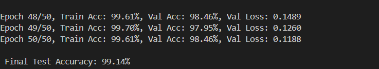

Lung Cancer Detection — EfficientNet
High accuracy chest X-ray classification with visual explanations
Summary: Trained an EfficientNet-based classifier for lung cancer detection using your dataset. The model achieved a test accuracy of 99% on the provided test split.
Implementation details:
Implementation details:
- Model: EfficientNet-B0 (PyTorch)
- Training data (example path):
D:/New folder/Lung cancer dataset1/Data1/train1 - Saved best model:
D:/New folder/efficientnet_lung_best.pth - Techniques: class-imbalance handling (weighted loss), strong augmentations, stratified validation and CPU-friendly training settings
- Explainability: Grad-CAM overlays to highlight suspicious regions and aid interpretability
- Prediction support: image input with overlaid probability & “See a doctor” suggestion for positive findings